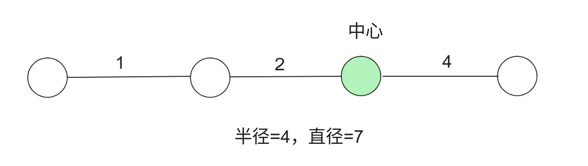
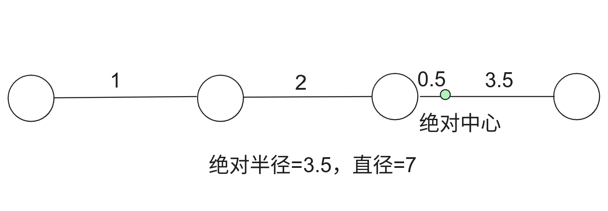
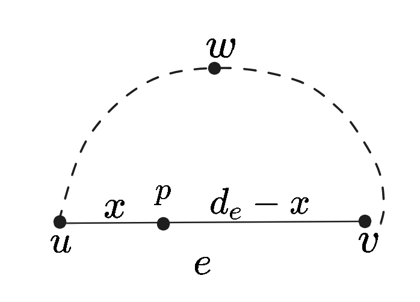
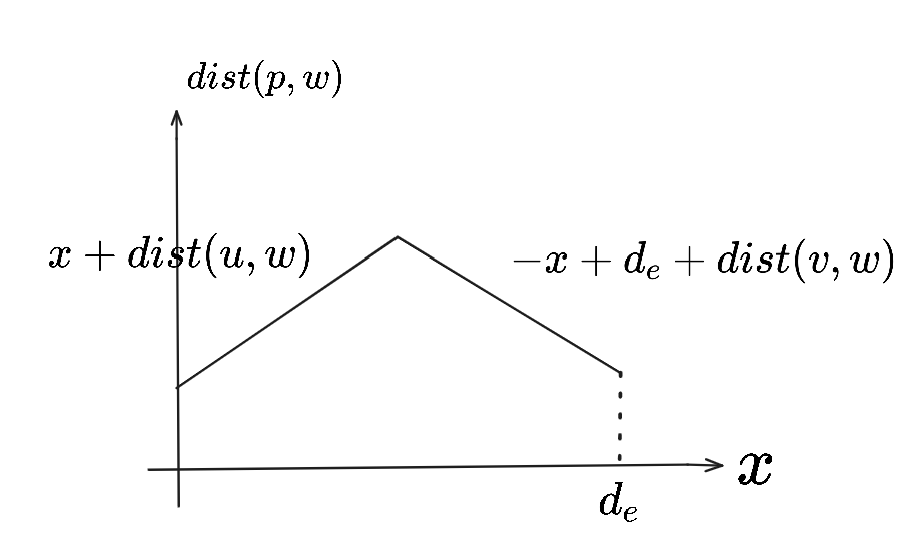
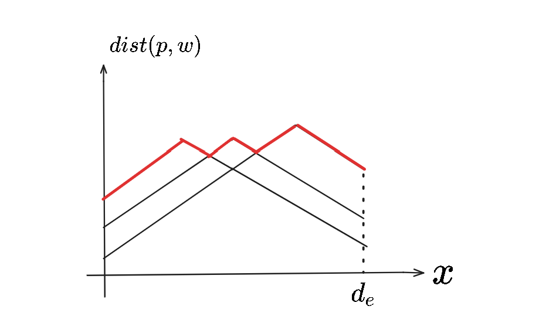
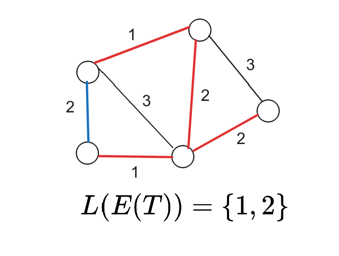
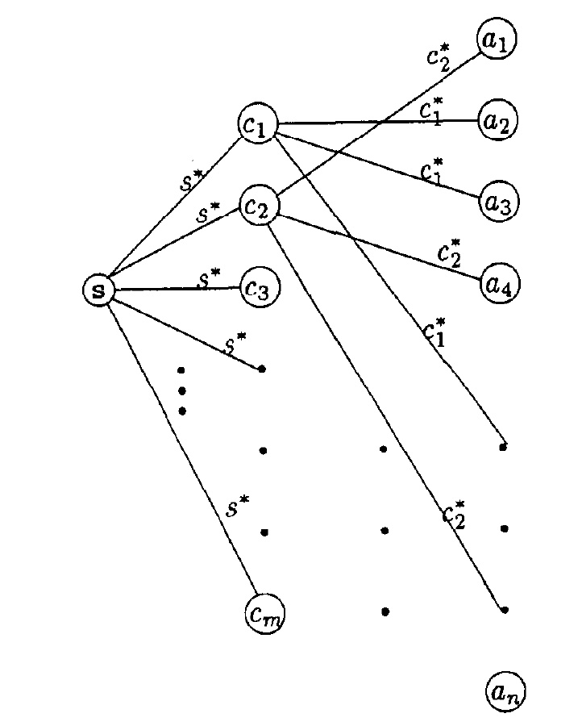

问题求解（三） Open Topic 8 笔记
OT：最小生成树问题有很多相关问题，例如 Steiner tree、k-MST、MBST 等，请调研至少 2 种问题（其中至多 1 种来自上述例子，欧氏最小生成树问题等仅限制原始问题输入的问题不在调研范围内），讨论适用场景，形式化描述问题并概述现有解决方案。
最小直径生成树和最小标签生成树
概述
主要介绍最小直径生成树(Mininum diameter spanning tree, MDST)以及最小标签生成树(Mininum labeling spanning tree, MLST)的相关算法。
MDST 主要参考了文献 [1] (Hassin & Tamir, 1995) 和 [2] (Hakimi, 1964)；MLST 主要参考了 [3] (Chang & Shing-Jiuan, 1997)。
MDST
最小直径生成树 - 定义
Def. 最小直径生成树(MDST)问题：对于非负权无向图 \(G=\langle V, E\rangle\)，寻找它的一棵生成树 \(T^*\)，使得对任意 \(G\) 的生成树 \(T\)，有
\[ diam(T^*)\le diam (T) \]
其中 \(diam(G')\) 是树 \(G'\) 的直径，定义为
\[ \max_{u\in G'}\max_{v\in G'}dist(u, v). \]
应用场景
适用于各种要最小化单次最大传输距离（即最小化直径）的场景，区别于建设费用对应的 MST 问题。
绝对中心问题(Absolute 1 center problem, A1CP)
图的中心：离心率 \(ecc(u)\) 最小的点 \(u\)。中心的离心率定义为图的半径 \(rad(G)\)。
离心率 \(ecc(u)\) 定义为 \(u\) 到离它最远点的距离，即 \[ ecc(u)=\max_{v\in V}dist(u, v). \]
但是直径不一定是半径的两倍！

- 图的绝对中心：允许把边拆开，每条边可以认为有无数细分的点。把细分后的图记为
\(G_A=\langle V_A, E\rangle\)。定义图
\(G\) 的绝对中心即为
\(G_A\) 的中心，\(G\) 的绝对半径即为 \(G_A\) 的半径。容易发现：
- \(diam(G_A)=diam(G)\)；
- \(G\) 的直径是绝对半径的两倍

MDST 和 A1CP 等价
Theorem.(MDST 和 A1CP 的等价性) 图 \(G\) 的绝对中心 \(G^*\) 的一棵最短路径树 \(T^*\) 是 \(G\) 的 MDST。
Proof. 给定 \(G\) 的任意一棵生成树 \(T\)，只需证明 \(diam(T^*)\le diam(T)\)。设 \(T\) 的绝对中心是 \(T^*\)。
\[ \begin{align*} diam(T^*)=&2 ecc_{T^*}(G^*) & (直径是绝对半径两倍)\\ =&2 ecc_{G_A}(G^*) & (最短路径树)\\ \le &2 ecc_{G_A}(T^*) & (G^* 是 G 的绝对中心)\\ \le &2 ecc_{T}(T^*) & (T 是 G 的子图)\\ =& diam(T) & (T 中直径是绝对半径的两倍) \end{align*} \]
最短路径树可以在 \(O(m+n\log n)\) 时间内求出。问题转化为寻找图的绝对中心。
寻找图的绝对中心
[2] (Hakimi, 1964) 给出了求图的绝对中心的方法。
绝对中心即 \(G_A\) 上离心率最小的点 \(u\in V_A\)，而这样的 \(u\) 一定在某条边上。
故可以分别考虑每条边上离心率最小的点 \(G^*(e)\)，称为 \(e\)-边绝对中心。最后 \(G^*\) 就是 \(\arg \min_{G^*(e)}ecc(G^*(e))\)。
寻找 \(e\)-边绝对中心
对边 \(e=(u, v)\)，考虑离 \(u\) 距离为 \(x\) 的内点 \(p\)，它离 \(V\) 中每个顶点 \(w\) 的最小距离为
\(dist(p, w)=\min(x+dist(u, w), -x+d_e+dist(v, w))\)。

以 \(dist(p, w)\) 和 \(x\) 为坐标系，描述了一个函数关系。

把全部的 \(w\) 遍历一遍，可以得到若干的线，取最大值。

容易线性 \(O(n)\) 得到全局最小值，从而得到 \(e\)-边绝对中心
对每条边考虑，得到 \(G\) 的绝对中心，时间复杂度 \(O(nm)\)。
算法瓶颈在于计算 ASAP。总时间复杂度为 \(O(nm+n^2\log n)\)。
总结
我们可以在 \(O(nm+n^2\log n)\) 时间内计算 A1CP，然后用 \(O(m+n\log n)\) 时间内求出绝对中心的最短路径树，即最小直径生成树。总时间复杂度为 \(O(nm+n^2\log n)\)。
MLST
最小标签生成树 - 定义
Def. 最小标签生成树(MLST)问题：给定图 \(G=\langle V, E\rangle\) 和标签函数 \(L: e\to S_L\)，寻找 \(G\) 的一棵生成树 \(T\)，最小化 \(|L(E(T))|\)，即最小化 \(T\) 使用了的标签数量。

应用场景
比如，在信息传递中，边代表传播介质（有光纤、电磁波、电话线、电缆等）。建设成本定义为使用的介质种类，这时最小化成本就是寻找 MLST。
MLST is NP-hard
通过将最小覆盖问题归约到 MLST 的判定版本 BLST，得到 BLST 是 NP-Complete，从而 MLST 是 NP-hard。
Def. 限制标签生成树(BLST)问题：给定图 \(G=\langle V, E\rangle\) 和 上界 \(W\)，是否存在 \(|L(E(T))| \le W\) 的生成树 \(T\)。
显然 BLST 是 NP 的，只需证明它是 NP-hard，从而是 NP-Complete 的。
Def. 最小覆盖问题：给定集合 \(S=\lbrace a_1, a_2, \cdots, a_n\rbrace\) 与 \(W\)，和 \(m\) 个 \(S\) 的子集 \(C_1, C_2, \cdots, C_m\subseteq S\)，是否存在 \(\le W\) 个 \(C_i\) 能够覆盖 \(S\)。
归约
对于给定的最小覆盖问题 \(\langle S, W, C_1, C_2, \cdots, C_m\rangle\)，建图如下：

图片来源：[3] (Chang & Shing-Jiuan, 1997)
若存在该图存在 \(W+1\) BLST，则原问题存在 W 最小覆盖。该归约显然是 poly 的。因为最小覆盖是 NP-Complete 的，故 BLST 也是 NP-Complete 的。从而 MLST 是 NP-hard 的。
接下来介绍两种启发式算法和一种基于 A* 的精确算法。
启发式算法 - 1. Edge Replacement Algorithm
算法流程：
- 任选一棵生成树 \(T\)。
- 尝试每条非树边，判断将这条边替代合法树边得到 \(T'\) 后使用的标签数能否减小，若可以减小则替代。
时间复杂度为 \(O(mn)\)。
启发式算法 - 2. Maximum Vertex Covering Algorithm
当图不连通时，在还未选过的标签中，选取加入后连通分支数目减少最多的标签，依次反复，直到图连通。
时间复杂度为 \(O(lmn)\)，\(l\) 为标签总数。
精确算法 - A*
将“每次搜索一个新的标签”的搜索算法改造成 A*。
\[ f(x)=g(x)+h(x) \]
- \(g(x)\) 是已经使用了的标签数量；
- \(h(x)\) 计算方法是：
- 首先得到由已选定的标签构成的连通块个数 \(t\)。则还需要 \(need=t-1\) 条边；
- 然后设还未选过的标签对应的边数由高到低为 \(e_1, e_2, \cdots, e_{l'}\)；
- 设置 \(h(x)\) 为最小的 \(j\) 使得 \(\sum_{i=1}^je_i\ge need\).
可以知道 \(h(x)\) 一定 \(\le\) 真实值 \(h^*(x)\)。
参考文献
[1] Hassin, R., & Tamir, A. (1995). On the minimum diameter spanning tree problem. Information processing letters, 53(2), 109-111.
[2] Hakimi, S. L. (1964). Optimum locations of switching centers and the absolute centers and medians of a graph. Operations research, 12(3), 450-459.
[3] Chang, R. S., & Shing-Jiuan, L. (1997). The minimum labeling spanning trees. Information Processing Letters, 63(5), 277-282.